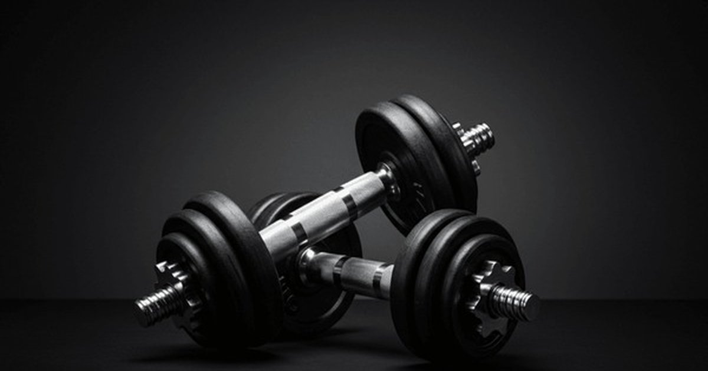

I used to set an alarm on my phone. Not to wake up. To remind me to drink my protein shake within 30 minutes of finishing my last set. I'd be in the locker room, still sweating, choking down whey before I even changed my shirt. I thought if I missed that window, my gains would evaporate. The Protein Intake Calculator can tell you how much you need. But the timing myth needs to die.Protein Intake Calculator
Enter your weight, activity level, and goal — get your daily protein target in grams per pound and grams per kilogram.
All data stays in your browser — we never see it.
Macro Split Planner
Enter your calorie target and protein percentage — get a daily macro split with meal-by-meal recommendations.
All data stays in your browser — we never see it.
Meal Protein Tracker
Log your daily meals and see protein per meal — get instant feedback on your distribution.
All data stays in your browser — we never see it.
Protein Source Comparator
Compare cost per gram, leucine content, PDCAAS score, and digestibility across protein sources.
All data stays in your browser — we never see it.